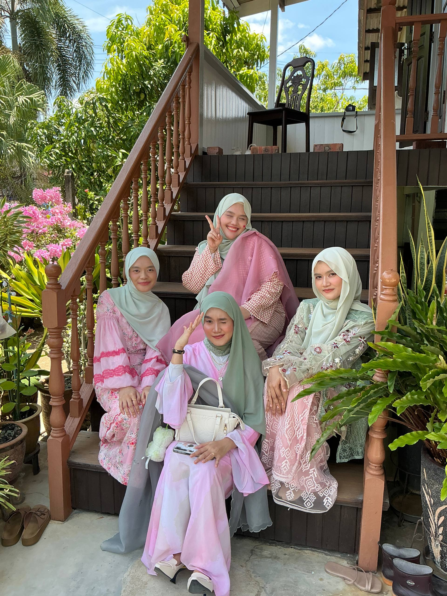
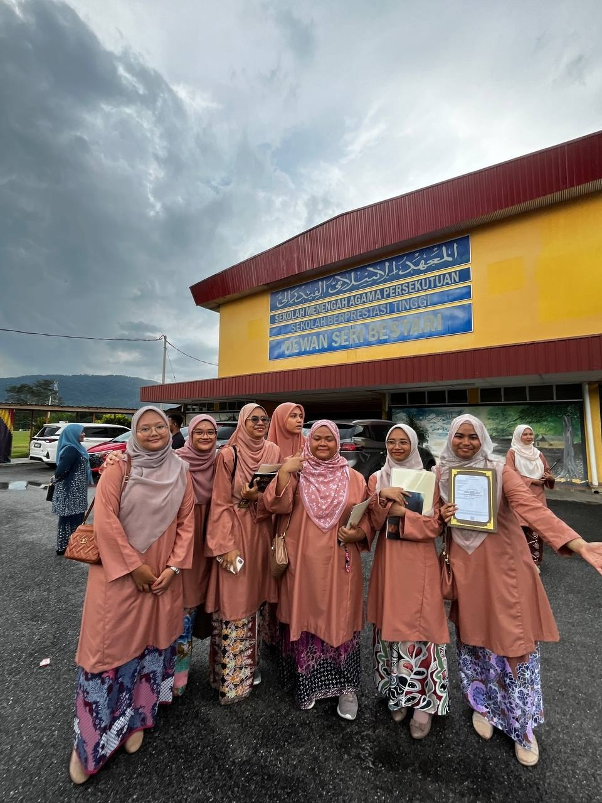

Hello! My name is Fatin Liyana Binti Abu Bakar, but normally people would just call me Liyana. I am currently a student at the Universiti Teknologi Mara in Kedah Branch. I thrive in creative environments and enjoy exploring new technologies while documenting my journey through this website.
I believe in continuous learning and challenging myself daily. Whether it's analyzing academic theories, writing clean web layouts, or exploring creative side projects, I love bringing structural thought to life.
In this website, I would just wanna share growth and experiences with everyone!
In getting to know me better, feel free to explore the different sections and learn more about my interests and experiences.
My Details
Usually, I dont share my personal details but here I think I will just state some of it so that you guys could know me better (～￣▽￣)～
📔 Biodata
As for this year (2026), I am just a 20 years old student who is passionate in continuing her studies at UiTM.
I was born in 21st of April 2006.
My parents have 4 daughters, and I am the third daughter. Even though I still have a younger sister, but people would always call me the youngest. Maybe because of my personality they thought I was the most innocent.
🎨 Personality
"I am definitely an introvert at heart-most of the time and maybe that is because my personality is INFJ, I love my alone time, though I do crave having someone by my side every now and then. When I am flying solo, I am never bored. I usually just dive into my hobbies, whether that is playing games, reading, building Lego sets, or baking up a storm in the kitchen (well, I only know how to bake but not cooking).
💡 Growth Goal
For the longest time, I measured my own worth by how happy I could make the people around me. But as this year unfolded, I realized that protecting everyone else's peace was actively destroying my own. I have learned the hard way that putting myself first is not a luxury but it is a necessity. This year, I am making a conscious commitment to prioritize my own happiness, validate my own feelings, and set boundaries without feeling guilty about it. For this year, it is time to start living for me
🌟 Fun Fact
Here is a little paradox about me - I love a clean, orderly environment, but my brain chemistry is apparently chaotic. I am super meticulous about keeping my room tidy, and I am deeply addicted to coffee (it is my daily requirement btw). However, coffee does not give me a high or a burst of energy. It actually knocks me out! It is my ultimate relaxation drink, to the point where I brew a cup late at night just to help me fall asleep.
My Inner Circle 💗
The ones who make my world a whole lot brighter.
🏠 My Family




They are my biggest support system. Being one of four sisters means there is never a dull moment at home. Even though we all have our own distinct personalities, they are the ones who ground me and know me better than anyone else. I love to be at home as they could see the real personality of mine.
👧🏻 My Friends





As an introvert, I keep my circle small but deeply meaningful. I love all of them with all my heart. They are like families and home to me. I hope that they know they are matters to me.
🐱 My Cats


I absolutely adore my cats! They are the ultimate therapy after a long day of classes. whenever I felt alone, or a bit loss I will always find my cats so that they could heal me. But since I was being afar from them, I could not be with them as much as I wanted.
My Fav Videos 💗
Whenever I watch this videos, I will always smile and laugh. Not just that, when I feel a bit lost or sad, I will watch them too ;D
Favorite Moments
This is me and my siblings but not complete cause my sister was not there.
Bye, thank you for reading it out ( •̀ ω •́ )y